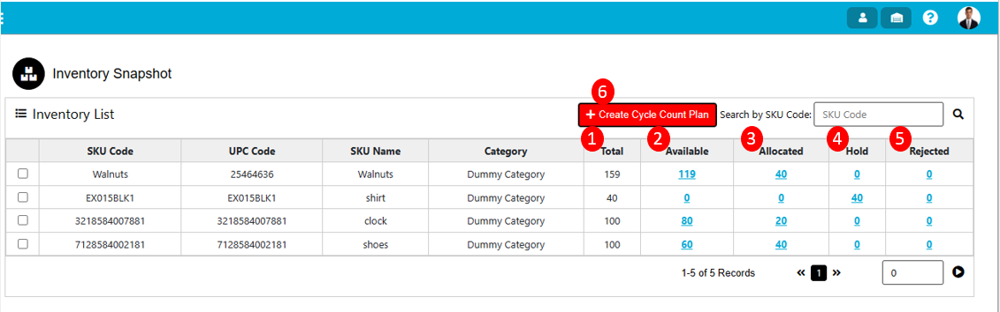
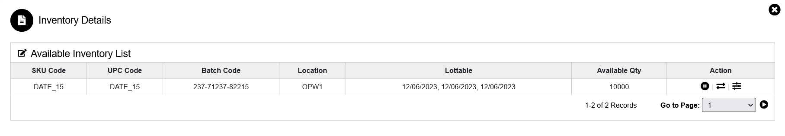
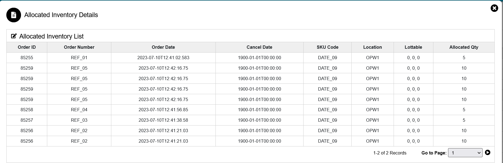
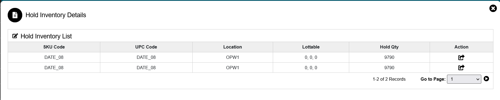
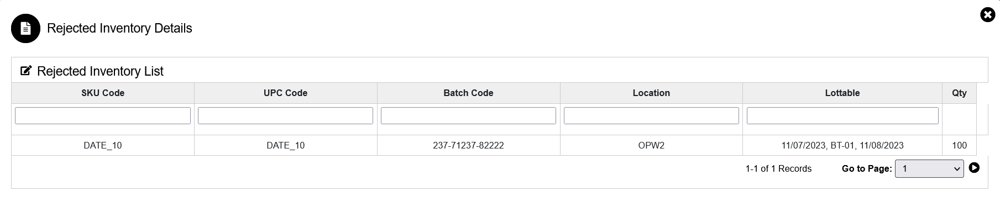
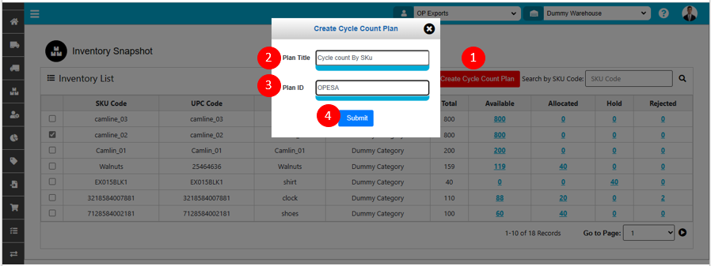
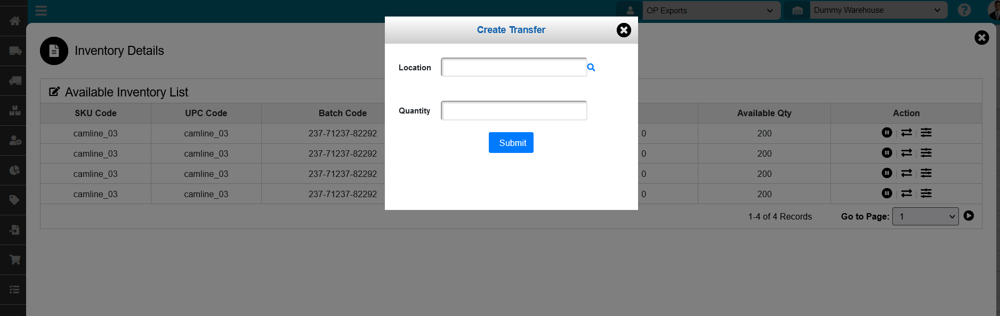
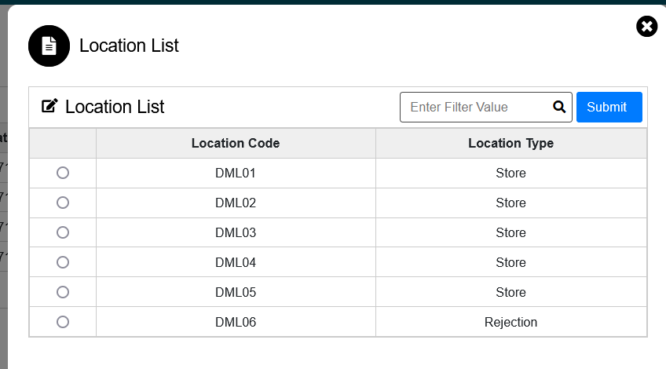

Inventory
Inventory
In the Inventory tab system will display all the inventory information along with sku details. The inventory system have a different part like available, allocated, hold, and rejected.

The various parts of this dialog are:
- Total: In the total column system will display the sum of available, allocated, hold & rejected qty.
- Available: In available quantity, the system will display quantity after completing the putaway of SKUs.
- Allocated Qty: In allocate qty field system will display how many quantities is allocated from the available balance.
- Hold: In the Hold field system will display how many quantity is hold from the available balance.
- Rejected: In rejected field system will display how many quantities are rejected from the available balance.
- Create Cycle Count Plan: After clicking create cycle count button system will display one pop-up for updating the cycle count details of plan title & plan id & after clicking on submit button the cycle count will create.
Inventory-Available
From the available tab system provided 2 different functionalities of Hold & adjustment.

- Hold: In the Hold field system will display how many quantity is hold from the available balance & the hold quantity will not be available for the allocation after holding.
If user want to hold the quantity, then he/she need to click on the hold button.
- Adjustment: From the adjustment tab user can adjust the available qty. For adjusting quantity user need to click on the adjustment tab then pop will display for entering qty & reason code then after clicking on submit button system will adjust the quantity into the available balance.
Inventory-Allocated

In allocated tab system will display all the details regarding allocation from which location allocation is done as well as lottable & allocate qty.
Inventory-Hold
After clicking on hold menu system will display the hold inventory detail screen. On the hold quantity screen system provided release functionality.

Release Functionality: After holding the quantity system will display the hold stock for allocation but user want to use the hold stock then user need to click on release button for again showing stock for allocation.
Inventory-Rejected
After clicking on rejected menu system will display the rejected inventory detail screen.

While QC system will add the damaged quantity to rejected location & if user want to see the rejected quantity information, then user able to see from the rejected inventory details.
Inventory-Cycle Count by SKU

To create Cycle Count Plan by SKU, use the "Inventory" menu. This will open the Inventory Snapshot wizard dialog and click on Create Cycle Count Plan button.
The various parts of this dialog are:
- Before clicking on Create Cycle Count Plan button user need to select single or multiple SKU whose Cycle Count need to be perform
- Plan Title: Need to enter the Plan Title for the Cycle Count to perform SKU wise.
- Plan ID: Need to enter the Plan ID for the Cycle Count to perform SKU wise. This field value is unique.
- Submit. When click on Submit Cycle Count Plan for SKU will be created.
Cycle Count Plan created will display in Administration menu of Cycle Count Section.
Inventory-Internal Transfer

If user want to to sku wise internal transfer then he/she can able to do from the inventory.For transferring sku user need to click on the internal transfer menu then the create transfer pop up will open then user need to search for the location & select the location from the list then user need to enter the quantity & click on submit button.

The internal Transfer should complete for mentioned location & selected sku.
Created with the Personal Edition of HelpNDoc: Effortlessly Create High-Quality Help Documentation with a Help Authoring Tool